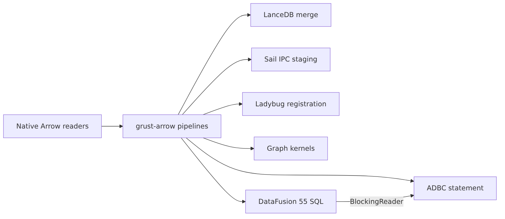

Grust’s Arrow-based adapters use grust-arrow for common
batch and IPC operations. The graph core and other adapters remain
independent of Arrow. LanceDB and Sail select Arrow 58; the private
Ladybug adapter selects Arrow 55. The default interchange and ADBC
helper use Arrow 59. These modules compile the same implementation
against the native SDK types.

ArrowTable retains arbitrary native Arrow columns,
metadata and batch boundaries. Its schema is checked when constructed.
Its into_reader method transfers ownership into the
standard RecordBatchReader interface without concatenating
batches or serializing their contents.
BatchReader wraps a standard reader with a row limit and
an input-batch memory limit. It pulls on demand and slices without
copying buffers. Errors terminate the stream after one error result. A
slice can retain its complete original allocation. The memory limit
applies to decoded Arrow arrays, not process RSS or the upstream
decoder’s temporary allocations. ByteLimitWriter separately
bounds encoded output, including schema bytes, before the sink grows
past its limit.
The shared IPC functions accept standard readers and caller-owned sinks. They support multiple batches and schema-only empty streams. IPC remains an explicit encoding boundary; it is not needed when producer and consumer already share native Arrow types.
The original ArrowGraph is a validated pair of
scalar-property batches:
| Table | Structural columns |
|---|---|
| Nodes | non-null UTF-8 node_id, label |
| Edges | non-null UTF-8 source, target,
label; nullable UTF-8 edge_id |
Property columns use property.<key> and a non-null
Boolean present.<key>. The marker distinguishes a
missing property from an explicit null. Scalar properties support Null,
Boolean, Int64, Float64 and UTF-8, preserving integer precision. Mixed
non-null types and complex graph properties are rejected by this scalar
interchange contract rather than silently coerced.
use grust::arrow::ArrowGraph;
use std::fs::File;
fn main() -> Result<(), Box<dyn std::error::Error>> {
let graph = grust::Graph::default();
let tables = ArrowGraph::from_graph(&graph)?;
tables.write_ipc(
File::create("nodes.arrow")?,
File::create("edges.arrow")?,
)?;
let restored = ArrowGraph::read_ipc(
File::open("nodes.arrow")?,
File::open("edges.arrow")?,
)?.to_graph()?;
assert_eq!(graph, restored);
Ok(())
}This legacy file-format API still stores one batch in each of two
Arrow files. ArrowGraphTables supports the same graph
contract across multiple batches. It validates global node identity and
edge endpoints without building property rows or adjacency. It preserves
isolates, loops, parallel edges and row order.
ArrowGraph::into_tables and
ArrowGraphTables::into_tables expose general Arrow tables
whose readers compose with other consumers.
These graph restrictions do not constrain arbitrary
ArrowTable values passed to ADBC or backend-native
registration. Those pipelines retain nested, dictionary, temporal and
extension columns according to the destination’s capabilities.
The shared universal storage layout uses id,label,props
for nodes and key,id,from_id,to_id,label,props for edges.
The property payload preserves Grust’s tagged serialization, including
complex values. Native storage encoders and decoders share the stable
edge-key validation rule. Projection can rename columns without copying
their arrays.
LanceDB’s load_arrow takes standard readers in that
storage layout and merges native batches, maintaining typed mirrors.
Sail’s load_arrow accepts its existing SQL column names and
plain-JSON property representation. It reuses identity columns and
performs required property normalization and endpoint-label resolution.
Spark Connect transports the staged batches as IPC. Sail’s graph IPC
convenience loader now uses the same streaming path.
Stream graph loads validate a batch before writing it. Nodes precede edges, and earlier batches can remain committed if a later operation fails or is cancelled. They do not promise atomic whole-import replacement. Consult the adapter contract for existing-row upserts, constraints and typed mirror behavior.
Ladybug can register native readers without IPC, and visit query batches without collecting all output. Registration requires all input batches simultaneously; a conservative retained-memory bound applies before registering the table. Registration creates a queryable Arrow table, not an implicit persisted graph upsert. Persisted graph loading continues through the adapter’s Arrow-backed COPY path and transaction policy.
Enable the facade’s adbc feature, or
grust-arrow’s optional adbc feature, to bind
an Arrow 59 reader to a caller-owned ADBC statement with
grust_arrow::adbc::ingest. ADBC controls connection
lifecycle, target catalog/schema, ingestion mode, transactions and
cancellation. The helper preserves driver errors and unknown
affected-row counts. An ingestion mode such as append is not
reinterpreted as graph upsert.
The optional ffi feature exports standard Arrow C
streams through upstream Arrow’s implementation and release callbacks.
Grust adds no unsafe FFI code. Rust callers using the same Arrow major
can share readers directly; IPC is an explicit option for serialized
cross-language or cross-version boundaries.
New adapters should reuse the standard reader and shared batch
operations, keeping only their schema and backend semantics locally.
Enable the facade’s datafusion feature for the shared
DataFusion 55 foundation. It registers native Arrow 59 tables and
validated graph catalogs without re-encoding their buffers, accepts
upstream table providers, and exposes DataFrames and streaming SQL
results. Working-memory, parallelism, batch size and spill policy are
explicit. Input buffers and retained results remain caller-owned
admission; the working pool is not a process RSS limit.
BlockingReader connects a result stream to synchronous
Arrow and ADBC consumers on an ordinary thread or
spawn_blocking, using a caller-owned live Tokio runtime. It
adds no worker, prefetch queue or IPC boundary. Existing backend SDKs
keep their own compatible Arrow and execution-engine versions. Cypher
lowering and algorithm kernel selection require separate semantic and
performance qualification; this foundation does not automatically change
them.
See the repository’s docs/arrow-pipelines.md for
detailed admission, compatibility and testing contracts. Reproducible
pipeline benchmarks measure native slicing, explicit IPC boundaries and
graph validation separately from backend load and algorithm timings.